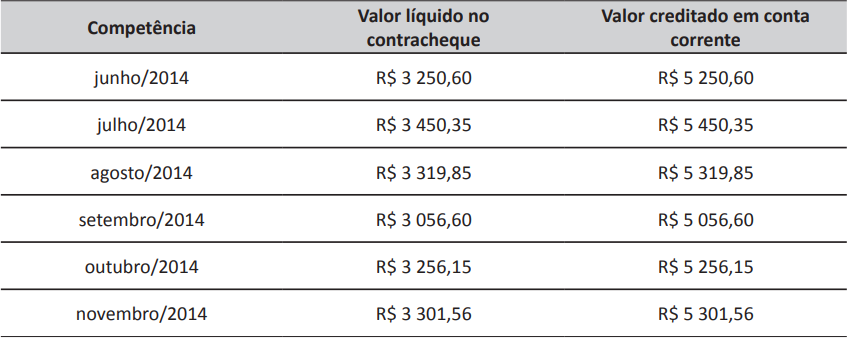

Um empregado que trabalhou em uma empresa no período de 01/06/2014 a 30/11/2014 foi demitido.
Ele moveu uma ação em processo trabalhista contra essa empresa, pois no cálculo do Fundo de Garantia
do Tempo de Serviço (FGTS) e do INSS, ela não havia recolhido os encargos sociais incidentes sobre as
gratificações recebidas. No processo, o ex-empregado da empresa apresentou os dados constantes da
tabela a seguir.

Apresentou, ainda, um e-mail enviado por um dos sócios da empresa, informando que ele receberia o
montante de R$ 2 000,00 mensais a título de gratificação por função. O juiz responsável pelo julgamento
do processo designou um perito para análise da situação.
Considerando esses dados, bem como alíquotas de 8% de FGTS e de 25,5% de INSS e desconsiderando
possíveis correções monetárias, assinale a opção correta.
-
O perito deverá solicitar à empresa as folhas de pagamento e o termo de rescisão desse empregado
para verificar o reflexo das alíquotas do FGTS e do INSS não recolhidas sobre os proventos recebidos,
incluindo nesse cálculo as verbas proporcionais e indenizatórias.
-
O total do FGTS devido ao empregado a título de gratificação por função, sem que se considerem os
respectivos reflexos, é de R$ 860,00, e o valor em aberto a título de INSS é de R$ 3 060,00.
-
O perito deverá informar, no laudo judicial, que o valor da gratificação não influenciará o cálculo de
horas extras, caso tenham ocorrido em alguma competência.
-
O valor de 40% referente à multa rescisória não será levado em consideração no valor a ser recolhido
do FGTS sobre as diferenças apuradas.
-
O ex-empregado terá direito a um valor adicional de R$ 166,67 mensais a título de férias proporcionais
ao tempo de serviço.